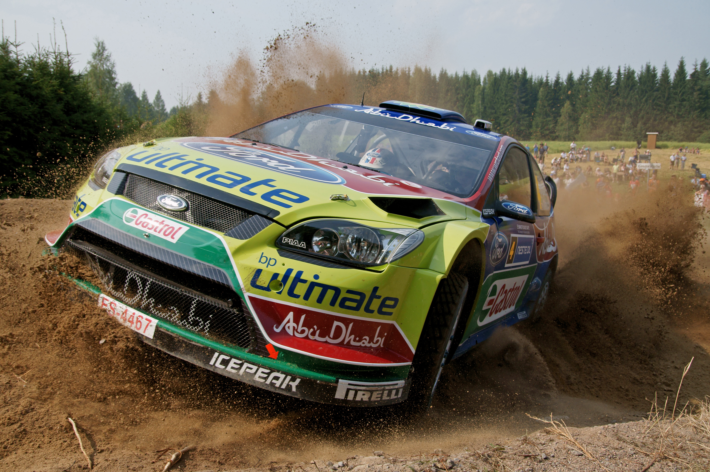

Üdv Finnországban!

A Finn rali, másnéven az Ezer tó rali egy Finnország középső részén megrendezett raliverseny. Évente közel fél millió nézővel büszkélkedhet Skandinávia leglátogatottab sportrendezvénye. Az utóbbi években rendre a rali-világbajnokság legnagyobb átlagsebességű versenye. Központjául Jyväskylä szolgál, és a szakaszok is az azt környező erdős utakon zajlanak.
A rendezvény 1951 óta minden évben megrendezésre került (a 2020-as egy kivétel a COVID-19 járvány miatt), 59-től az ERC (európai ralibajnokság), 73-tól már a WRC (rali-világbajnokság) részévé vált.
A győztesek táblázata (egyedibb névért lépjen kapcsolatba a weboldal készítőjével)